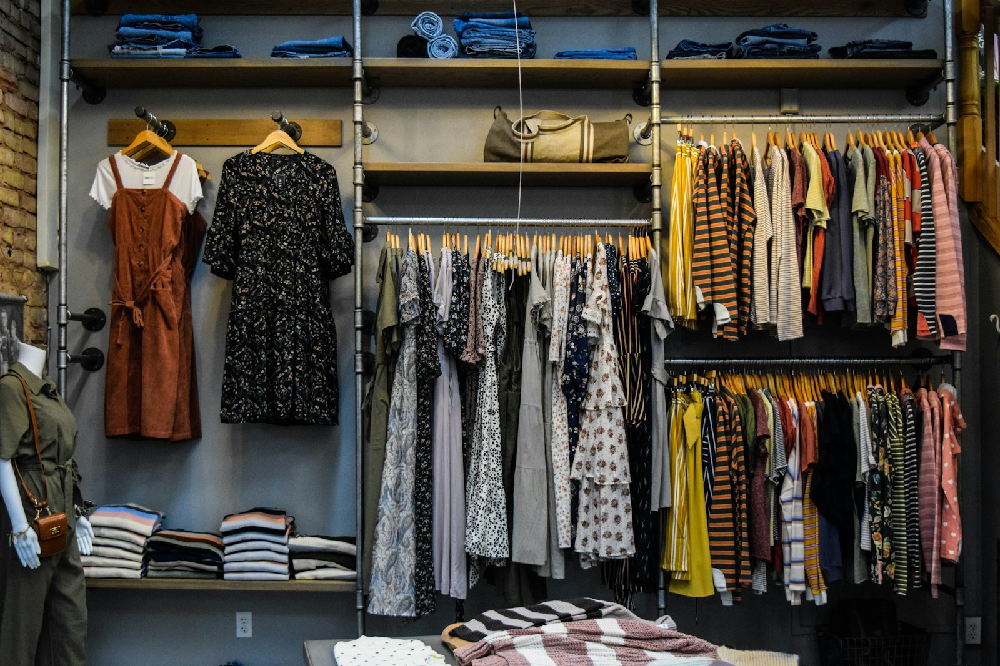
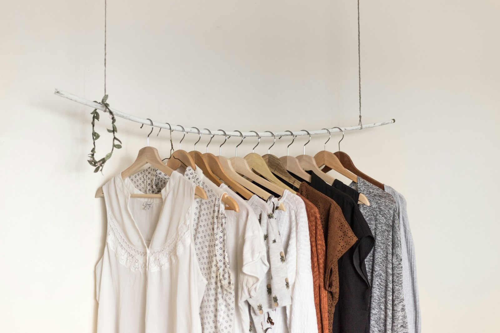

01
Fibre first
Wool from Biella, silk from Suzhou, linen from Normandy. We choose mills we can visit, and fibres we can trace back to the farm.
Our story
Écru began in a small Lisbon studio in 2018 with a simple question: what if we made fewer things, better? Six years on, we still make two collections a year, with the same mills, the same makers, and the same belief that a wardrobe should be kept.

A quiet manifesto
We believe the most sustainable garment is the one you already own. So we make clothes that are easy to keep — generous in cut, honest in fibre, and repairable by design. Nothing loud. Nothing disposable. Just the pieces you reach for, again and again.
What we stand for
01
Wool from Biella, silk from Suzhou, linen from Normandy. We choose mills we can visit, and fibres we can trace back to the farm.
02
Two small collections a year, produced in limited runs. We would rather sell out than overproduce, and we never destroy unsold stock.
03
Every maker in our circle is paid above the local living wage. We publish our factory list and visit each partner at least twice a year.
04
Free repairs for life on every Écru piece. When something wears through, send it back and our atelier will mend it, quietly and well.

We are not trying to dress you for a season. We are trying to make the piece you will still be wearing in ten years.Mara Oliveira — Founder & Creative Director
A slow chronology
No overnight drops, no seasonal churn. Just a steady, deliberate build — one relationship and one collection at a time.
2018
Mara Oliveira opens a 30-square-metre studio in Alfama and makes twelve Atelier Coats with a family-run wool mill in Biella.
2020
We move to a larger atelier in Porto, hire our first full-time pattern cutter, and begin publishing the full factory list.
2022
Our repair programme launches. Any Écru piece, any age, mended by the same hands that made it — for as long as it can be worn.
2024
We remove all virgin synthetics from our collections and introduce sandwashed silk and Portuguese merino.
2026
The collection stays deliberately small. Twenty pieces, fourteen partners, one quiet idea: fewer, better things.
Start with one piece you will reach for every week. We will help you choose it.